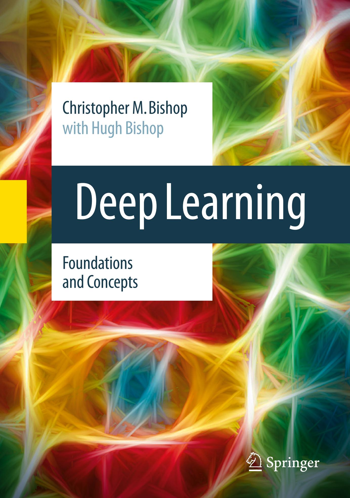

Deep Learning
Christopher M. Bishop • Hugh Bishop
Deep Learning
Foundations and Concepts
Christopher M. Bishop Microsoft Research Cambridge, UK
Hugh Bishop Wayve Technologies Ltd London, UK
ISBN 978-3-031-45467-7 ISBN 978-3-031-45468-4 (eBook) https://doi.org/10.1007/978-3-031-45468-4
© The Editor(s) (if applicable) and The Author(s), under exclusive license to Springer Nature Switzerland AG 2024
This work is subject to copyright. All rights are solely and exclusively licensed by the Publisher, whether the whole or part of the material is concerned, specifically the rights of translation, reprinting, reuse of illustrations, recitation, broadcasting, reproduction on microfilms or in any other physical way, and transmission or information storage and retrieval, electronic adaptation, computer software, or by similar or dissimilar methodology now known or hereafter developed.
The use of general descriptive names, registered names, trademarks, service marks, etc. in this publication does not imply, even in the absence of a specific statement, that such names are exempt from the relevant protective laws and regulations and therefore free for general use.
The publisher, the authors, and the editors are safe to assume that the advice and information in this book are believed to be true and accurate at the date of publication. Neither the publisher nor the authors or the editors give a warranty, expressed or implied, with respect to the material contained herein or for any errors or omissions that may have been made. The publisher remains neutral with regard to jurisdictional claims in published maps and institutional affiliations.
Cover illustration: maksimee / Alamy Stock Photo This Springer imprint is published by the registered company Springer Nature Switzerland AG The registered company address is: Gewerbestrasse 11, 6330 Cham, Switzerland
Paper in this product is recyclable.
Preface
Deep learning uses multilayered neural networks trained with large data sets to solve complex information processing tasks and has emerged as the most successful paradigm in the field of machine learning. Over the last decade, deep learning has revolutionized many domains including computer vision, speech recognition, and natural language processing, and it is being used in a growing multitude of applications across healthcare, manufacturing, commerce, finance, scientific discovery, and many other sectors. Recently, massive neural networks, known as large language models and comprising of the order of a trillion learnable parameters, have been found to exhibit the first indications of general artificial intelligence and are now driving one of the biggest disruptions in the history of technology.
Goals of the book
This expanding impact has been accompanied by an explosion in the number and breadth of research publications in machine learning, and the pace of innovation continues to accelerate. For newcomers to the field, the challenge of getting to grips with the key ideas, let alone catching up to the research frontier, can seem daunting. Against this backdrop, Deep Learning: Foundations and Concepts aims to provide newcomers to machine learning, as well as those already experienced in the field, with a thorough understanding of both the foundational ideas that underpin deep learning as well as the key concepts of modern deep learning architectures and techniques. This material will equip the reader with a strong basis for future specialization. Due to the breadth and pace of change in the field, we have deliberately avoided trying to create a comprehensive survey of the latest research. Instead, much of the value of the book derives from a distillation of key ideas, and although the field itself can be expected to continue its rapid advance, these foundations and concepts are likely to stand the test of time. For example, large language models have been evolving very rapidly at the time of writing, yet the underlying transformer architecture and attention mechanism have remained largely unchanged for the last five years, while many core principles of machine learning have been known for decades.
Responsible use of technology
Deep learning is a powerful technology with broad applicability that has the potential to create huge value for the world and address some of society's most pressing challenges. However, these same attributes mean that deep learning also has potential both for deliberate misuse and to cause unintended harms. We have chosen not to discuss ethical or societal aspects of the use of deep learning, as these topics are of such importance and complexity that they warrant a more thorough treatment than is possible in a technical textbook such as this. Such considerations should, however, be informed by a solid grounding in the underlying technology and how it works, and so we hope that this book will make a valuable contribution towards these important discussions. The reader is, nevertheless, strongly encouraged to be mindful about the broader implications of their work and to learn about the responsible use of deep learning and artificial intelligence alongside their studies of the technology itself.
Structure of the book
The book is structured into a relatively large number of smaller bite-sized chapters, each of which explores a specific topic. The book has a linear structure in the sense that each chapter depends only on material covered in earlier chapters. It is well suited to teaching a two-semester undergraduate or postgraduate course on machine learning but is equally relevant to those engaged in active research or in self-study.
A clear understanding of machine learning can be achieved only through the use of some level of mathematics. Specifically, three areas of mathematics lie at the heart of machine learning: probability theory, linear algebra, and multivariate calculus. The book provides a self-contained introduction to the required concepts in probability theory and includes an appendix that summarizes some useful results in linear algebra. It is assumed that the reader already has some familiarity with the basic concepts of multivariate calculus although there are appendices that provide introductions to the calculus of variations and to Lagrange multipliers. The focus of the book, however, is on conveying a clear understanding of ideas, and the emphasis is on techniques that have real-world practical value rather than on abstract theory. Where possible we try to present more complex concepts from multiple complementary perspectives including textual description, diagrams, and mathematical formulae. In addition, many of the key algorithms discussed in the text are summarized in separate boxes. These do not address issues of computational efficiency, but are provided as a complement to the mathematical explanations given in the text. We therefore hope that the material in this book will be accessible to readers from a variety of backgrounds.
Conceptually, this book is perhaps most naturally viewed as a successor to Neural Networks for Pattern Recognition (Bishop, 1995b), which provided the first comprehensive treatment of neural networks from a statistical perspective. It can also be considered as a companion volume to Pattern Recognition and Machine Learning (Bishop, 2006), which covered a broader range of topics in machine learning although it predated the deep learning revolution. However, to ensure that this
new book is self-contained, appropriate material has been carried over from Bishop (2006) and refactored to focus on those foundational ideas that are needed for deep learning. This means that there are many interesting topics in machine learning discussed in Bishop (2006) that remain of interest today but which have been omitted from this new book. For example, Bishop (2006) discusses Bayesian methods in some depth, whereas this book is almost entirely non-Bayesian.
The book is accompanied by a web site that provides supporting material, including a free-to-use digital version of the book as well as solutions to the exercises and downloadable versions of the figures in PDF and JPEG formats:
https://www.bishopbook.com
The book can be cited using the following BibTex entry:
@book{Bishop:DeepLearning24,
author = {Christopher M. Bishop and Hugh Bishop},
title = {Deep Learning: Foundations and Concepts},
year = {2024},
publisher = {Springer}
}If you have any feedback on the book or would like to report any errors, please send these to feedback@bishopbook.com
References
In the spirit of focusing on core ideas, we make no attempt to provide a comprehensive literature review, which in any case would be impossible given the scale and pace of change of the field. We do, however, provide references to some of the key research papers as well as review articles and other sources of further reading. In many cases, these also provide important implementation details that we gloss over in the text in order not to distract the reader from the central concepts being discussed.
Many books have been written on the subject of machine learning in general and on deep learning in particular. Those which are closest in level and style to this book include Bishop (2006), Goodfellow, Bengio, and Courville (2016), Murphy (2022), Murphy (2023), and Prince (2023).
Over the last decade, the nature of machine learning scholarship has changed significantly, with many papers being posted online on archival sites ahead of, or even instead of, submission to peer-reviewed conferences and journals. The most popular of these sites is arXiv, pronounced 'archive', and is available at
https://arXiv.org
The site allows papers to be updated, often leading to multiple versions associated with different calendar years, which can result in some ambiguity as to which version should be cited and for which year. It also provides free access to a PDF of each paper. We have therefore adopted a simple approach of referencing the paper according to the year of first upload, although we recommend reading the most recent version.
Papers on arXiv are indexed using a notation arXiv:YYMM.XXXXX where YY and MM denote the year and month of first upload, respectively. Subsequent versions are denoted by appending a version number N in the form arXiv:YYMM.XXXXXVN.
Exercises
Each chapter concludes with a set of exercises designed to reinforce the key ideas explained in the text or to develop and generalize them in significant ways. These exercises form an important part of the text and each is graded according to difficulty ranging from $(\star)$, which denotes a simple exercise taking a few moments to complete, through to $(\star \star \star)$, which denotes a significantly more complex exercise. The reader is strongly encouraged to attempt the exercises since active participation with the material greatly increases the effectiveness of learning. Worked solutions to all of the exercises are available as a downloadable PDF file from the book web site.
Mathematical notation
We follow the same notation as Bishop (2006). For an overview of mathematics in the context of machine learning, see Deisenroth, Faisal, and Ong (2020).
Vectors are denoted by lower case bold roman letters such as $\mathbf{x}$, whereas matrices are denoted by uppercase bold roman letters, such as $\mathbf{M}$. All vectors are assumed to be column vectors unless otherwise stated. A superscript $\mathbf{T}$ denotes the transpose of a matrix or vector, so that $\mathbf{x}^{\mathbf{T}}$ will be a row vector. The notation $(w_1,\ldots,w_M)$ denotes a row vector with M elements, and the corresponding column vector is written as $\mathbf{w}=(w_1,\ldots,w_M)^{\mathbf{T}}$. The $M\times M$ identity matrix (also known as the unit matrix) is denoted $\mathbf{I}_M$, which will be abbreviated to $\mathbf{I}$ if there is no ambiguity about its dimensionality. It has elements $I_{ij}$ that equal 1 if i=j and 0 if $i\neq j$. The elements of a unit matrix are sometimes denoted by $\delta_{ij}$. The notation 1 denotes a column vector in which all elements have the value 1. $\mathbf{a} \oplus \mathbf{b}$ denotes the concatenation of vectors $\mathbf{a}$ and $\mathbf{b}$, so that if $\mathbf{a}=(a_1,\ldots,a_N)$ and $\mathbf{b}=(b_1,\ldots,b_M)$ then $\mathbf{a}\oplus\mathbf{b}=(a_1,\ldots,a_N,b_1,\ldots,b_M)$. |x| denotes the modulus (the positive part) of a scalar x, also known as the absolute value. We use det $\mathbf{A}$ to denote the determinant of a matrix $\mathbf{A}$.
The notation $x \sim p(x)$ signifies that x is sampled from the distribution p(x). Where there is ambiguity, we will use subscripts as in $p_x(\cdot)$ to denote which density is referred to. The expectation of a function f(x,y) with respect to a random variable x is denoted by $\mathbb{E}_x[f(x,y)]$. In situations where there is no ambiguity as to which variable is being averaged over, this will be simplified by omitting the suffix, for instance $\mathbb{E}[x]$. If the distribution of x is conditioned on another variable z, then the corresponding conditional expectation will be written $\mathbb{E}_x[f(x)|z]$. Similarly, the variance of f(x) is denoted var[f(x)], and for vector variables, the covariance is written $\text{cov}[\mathbf{x},\mathbf{y}]$. We will also use $\text{cov}[\mathbf{x}]$ as a shorthand notation for $\text{cov}[\mathbf{x},\mathbf{x}]$.
The symbol $\forall$ means 'for all', so that $\forall m \in \mathcal{M}$ denotes all values of m within the set $\mathcal{M}$. We use $\mathbb{R}$ to denote the real numbers. On a graph, the set of neighbours of node i is denoted $\mathcal{N}(i)$, which should not be confused with the Gaussian or normal distribution $\mathcal{N}(x|\mu,\sigma^2)$. A functional is denoted f[y] where y(x) is some function. The concept of a functional is discussed in Appendix B. Curly braces $\{\}$ denote a
set. The notation $g(x) = \mathcal{O}(f(x))$ denotes that |f(x)/g(x)| is bounded as $x \to \infty$. For instance, if $g(x) = 3x^2 + 2$, then $g(x) = \mathcal{O}(x^2)$. The notation $\lfloor x \rfloor$ denotes the 'floor' of x, i.e., the largest integer that is less than or equal to x.
If we have N independent and identically distributed (i.i.d.) values $\mathbf{x}_1,\dots,\mathbf{x}_N$ of a D-dimensional vector $\mathbf{x}=(x_1,\dots,x_D)^\mathrm{T}$, we can combine the observations into a data matrix $\mathbf{X}$ of dimension $N\times D$ in which the nth row of $\mathbf{X}$ corresponds to the row vector $\mathbf{x}_n^\mathrm{T}$. Thus, the n,i element of $\mathbf{X}$ corresponds to the ith element of the nth observation $\mathbf{x}_n$ and is written $x_{ni}$. For one-dimensional variables, we denote such a matrix by $\mathbf{X}$, which is a column vector whose nth element is $x_n$. Note that $\mathbf{X}$ (which has dimensionality N) uses a different typeface to distinguish it from $\mathbf{x}$ (which has dimensionality D).
Acknowledgements
We would like to express our sincere gratitude to the many people who reviewed draft chapters and provided valuable feedback. In particular, we wish to thank Samuel Albanie, Cristian Bodnar, John Bronskill, Wessel Bruinsma, Ignas Budvytis, Chi Chen, Yaoyi Chen, Long Chen, Fergal Cotter, Sam Devlin, Aleksander Durumeric, Sebastian Ehlert, Katarina Elez, Andrew Foong, Hong Ge, Paul Gladkov, Paula Gori Giorgi, John Gossman, Tengda Han, Juyeon Heo, Katja Hofmann, Chin-Wei Huang, Yongchaio Huang, Giulio Isacchini, Matthew Johnson, Pragya Kale, Atharva Kelkar, Leon Klein, Pushmeet Kohli, Bonnie Kruft, Adrian Li, Haiguang Liu, Ziheng Lu, Giulia Luise, Stratis Markou, Sergio Valcarcel Macua, Krzysztof Maziarz, Matěj Mezera, Laurence Midgley, Usman Munir, Félix Musil, Elise van der Pol, Tao Oin, Isaac Reid, David Rosenberger, Lloyd Russell, Maximilian Schebek, Megan Stanley, Karin Strauss, Clark Templeton, Marlon Tobaben, Aldo Sayeg Pasos-Trejo, Richard Turner, Max Welling, Furu Wei, Robert Weston, Chris Williams, Yingce Xia, Shufang Xie, Iryna Zaporozhets, Claudio Zeni, Xieyuan Zhang, and many other colleagues who contributed through valuable discussions. We would also like to thank our editor Paul Drougas and many others at Springer, as well as the copy editor Jonathan Webley, for their support during the production of the book.
We would like to say a special thank-you to Markus Svensén, who provided immense help with the figures and typesetting for Bishop (2006) including the LATEX style files, which have also been used for this new book. We are also grateful to the many scientists who allowed us to reproduce diagrams from their published work. Acknowledgements for specific figures appear in the associated figure captions.
Chris would like to express sincere gratitude to Microsoft for creating a highly stimulating research environment and for providing the opportunity to write this book. The views and opinions expressed in this book, however, are those of the authors and are therefore not necessarily the same as those of Microsoft or its affiliates. It has been a huge privilege and pleasure to collaborate with my son Hugh in preparing this book, which started as a joint project during the first Covid lockdown.
x PREFACE
Hugh would like to thank Wayve Technologies Ltd for generously allowing him to work part time so that he could collaborate in writing this book as well as for providing an inspiring and supportive environment for him to work and learn in. The views expressed in this book are not necessarily the same as those of Wayve or its affiliates. He would like to express his gratitude to his fiancée Jemima for her constant support as well as her grammatical and stylistic consultations. He would also like to thank Chris, who has been an excellent colleague and an inspiration to Hugh throughout his life.
Finally, we would both like to say a huge thank-you to our family members Jenna and Mark for so many things far too numerous to list here. It seems a very long time ago that we all gathered on the beach in Antalya to watch a total eclipse of the sun and to take a family photo for the dedication page of Pattern Recognition and Machine Learning!
Chris Bishop and Hugh Bishop Cambridge, UK October, 2023